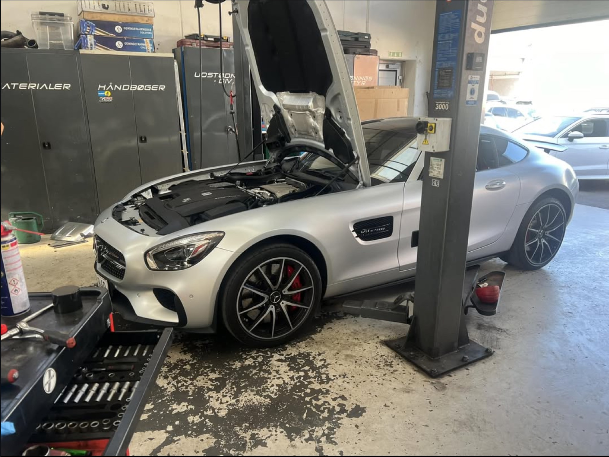
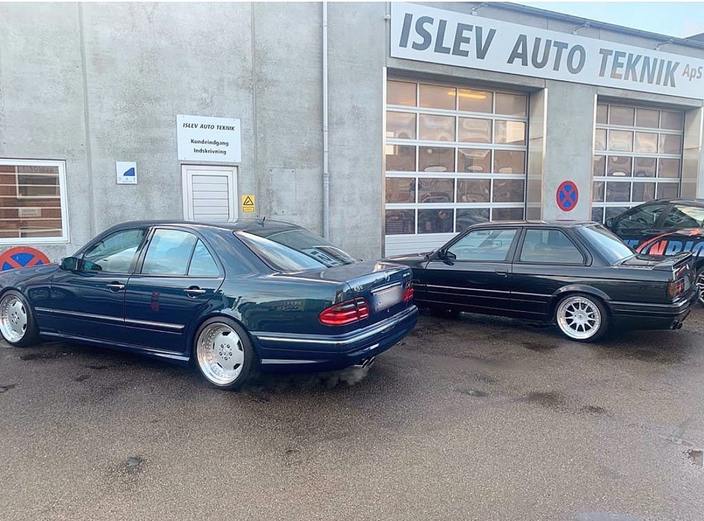
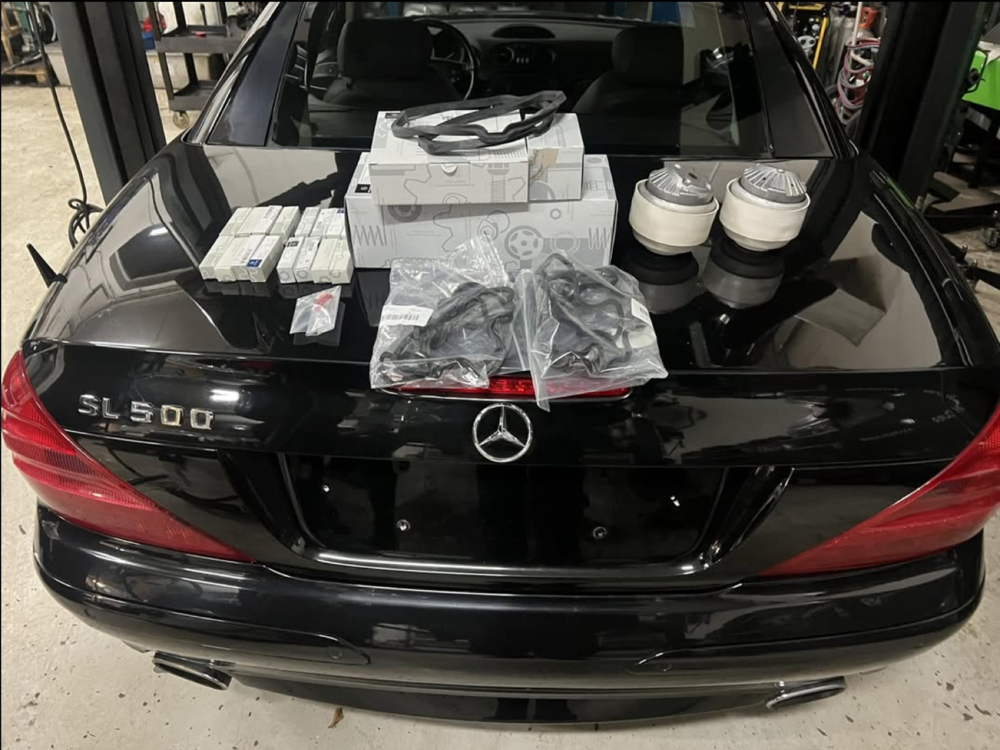
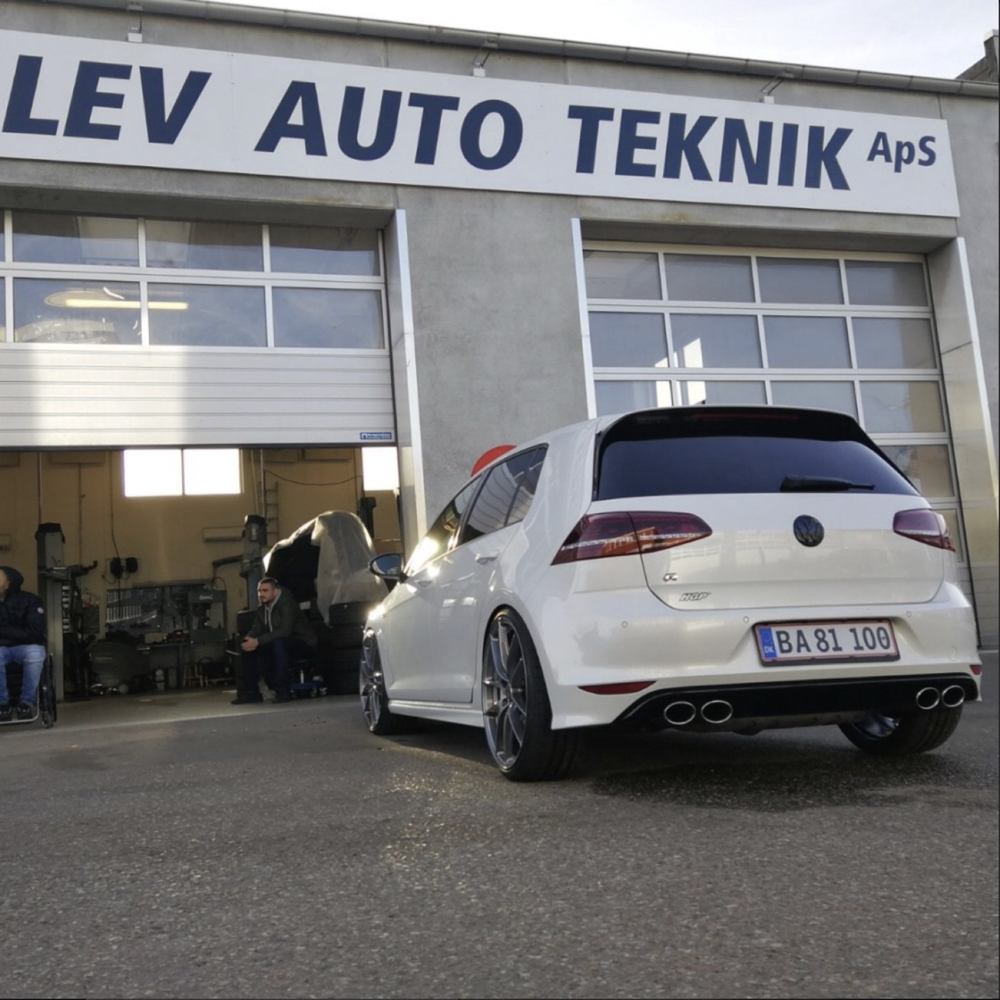

Service og reparation
Vedligeholdelse og bilreparation Rødovre på alle bilmærker.

ISLEV AUTO TEKNIK · RØDOVRE
Islev Auto Teknik i Rødovre arbejder med alt fra almindelig service til AMG, Audi RS, BMW M og andre entusiastbiler.
Islev Auto Teknik er et selvstændigt værksted i Rødovre med erfaring i service, fejlfinding og reparation af både hverdagsbiler, premiumbiler og performancebiler.
Her kommer AMG, Audi RS, BMW M, premium biler og entusiastbiler ind for arbejde, der kræver teknisk overblik og respekt for bilen.


Nogle biler kræver mere end et almindeligt serviceeftersyn. Hos Islev Auto Teknik får bilen en grundig gennemgang, tydelig dialog og arbejde udført med respekt for bilens stand og karakter.

Islev Auto Teknik sælger også reservedele, fælge, udstyr og andre dele til bilen via DBA.
Se DBA-shopHar bilen brug for service, fejlfinding eller reparation? Kontakt Islev Auto Teknik direkte.
60 12 17 22